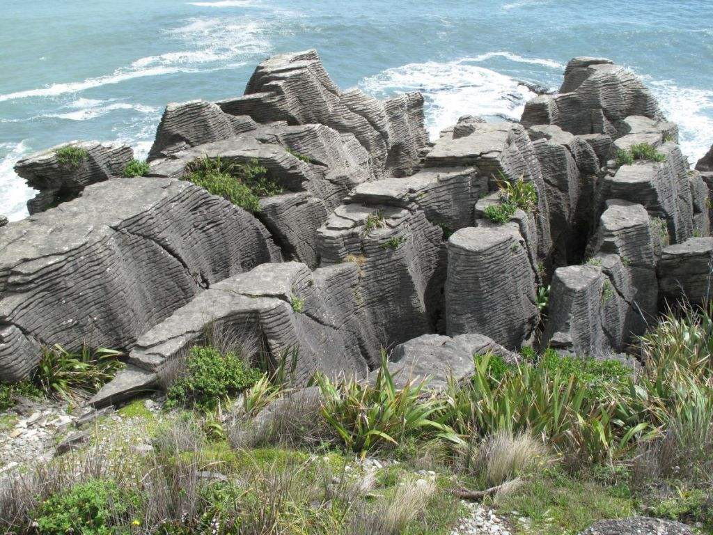

【精选景点】：福克斯冰川+千层岩+蹦极大桥+毛利大圆石+萤火虫洞+玛塔玛塔小镇+毛利文化村+三大湖+皇家牧场
【深度体验】：皇后镇1天自由活动，随心安排
【美食畅享】：酒店三道式+峡湾游船午餐+酒店西餐+怀托摩BBQ+中式鹿肉餐
【优选航空】：五星航空---新西兰航空，上海往返直飞
- 常规型
第1天 上海奥克兰
- ★于上海浦东机场T2航站楼集合，办理登记手续
- ★搭乘世界十大安全航空公司新西兰航空的全新787-9梦想客机前往新西兰——奥克兰。新西兰是个天然氧吧，空气里弥漫着草、泥土拌和着太阳的香味。到了新西兰，如同进入了一个迷幻的童话世界，河流、草原、森林，高山蓝天下，星星点点的牛羊甩着尾巴在吃草，让你回归到大自然，到了新西兰才能真正体现到这种原始的感觉。
- 餐饮说明：早餐：自理 中餐：自理 晚餐：自理
- 住宿说明：夜宿飞机上
- 参考航班：NZ288(1415/0550+1)
第2天奥克兰-基督城 - 霍基蒂卡/格雷茅斯/莫阿纳
★抵达后办理入境手续，随后搭乘飞机飞往基督城，前往南太平洋富有英式古典气息的基督城。抵达基督城，导游接机。
★午餐后，带您领略基督城这个美丽的花园城市：【植物园】,玫瑰园是植物园的中心,位于新西兰的雅芳河(Avon Rvier)。【雅芳河】在基督城的市中心，有一条贯穿全城的河——雅芳河(Avon River)， 河岸两旁绿草如茵，植满了白杨，梧桐，垂柳等绿荫，加上错落其间的花坛，不难体会花木与此地人们的亲密关系与互相依存的情感，即便称基督城拥有“花园城市”美名，也不为过了。【艺术中心】(外观不入内)这里原是坎特伯里大学，早期替纽西兰孕育了不少学术界的知名人物，也为此区奠立了浓厚的艺术气息。【基督城博物馆】位于基督城市中心，其外观是一幢庄严的欧式建筑。馆内不仅有展示新西兰历史、自然和毛利文化、艺术的展厅，还有很多与南极相关的主题，比如栩栩如生的帝企鹅雕塑，以及科拉克儿小艇(Coracle)，那是 1907 年在失望岛遭遇海难的人们的救命船。同时这里也有很多南太平洋的鸟类标本。您还可以看到关于基督城 2010 年 9 月以来几次大地震对这座城市影响，对基督城有更深入的理解。【梦娜维尔花园】“花园城市”基督城在大地震后，瞬息间满目疮痍，目前还在重建中。梦娜维尔花园，被公认为基督城花园的经典代表，地震没有给它带来严重的破坏，我们才得以从这里寻找基督城曾经的美丽。梦娜维尔花园属典型的传统维多利亚式庄园，美丽的雅芳河纵贯其间，小溪、别墅、草坪、花园和树林，清雅秀丽，小桥流水，芳草如茵，绿柳垂荫，宛若置身英国剑桥的浪漫气氛，俨然理想的童话世界。
★随后入住酒店休息。
(PS:如有客人年龄不到20岁,酒店三道式午餐改为日式铁板烧）
(PS:因酒店紧张,也许安排附近。例如格雷茅斯等区域三星酒店，请谅解
餐饮说明：早餐：飞机餐 中餐：酒店三道式 晚餐：酒店晚餐（班期11/26,12/5,3/12）除上述3个班期外，其它班期晚餐：中式6菜1汤
住宿说明：布伦纳湖酒店(Hotel Lake Brunner)或金斯盖特酒店（Kingsgate Hotel Greymouth）或格雷茅斯阿什利酒店（Ashley Hotel Greymouth）或诺亚方舟背包客（Noah's Ark Backpackers）或艾派恩玫瑰汽车旅馆（Alpine Rose Greymouth Motel）或霍基蒂卡海滨酒店（Beachfront Hotel Hokitika）或网评3星
参考航班：NZ531 （1000/1125）
第3天霍基蒂卡/格雷茅斯/莫阿纳 -西岸艺术小镇 - 约瑟夫冰川或福克斯冰川或哈斯特（车程约3小时）
★酒店早餐后出发游览PUNAKAKI观赏【千层薄饼岩石】随后开车前往艺术小镇——霍奇蒂卡。
★【霍奇蒂卡】 自1860年代的淘金热时期曾经是热闹又繁荣的海滨小镇，现在是纽西兰特有玉石Pounamu的加工制造中心，又有纽西兰手工艺术中心的美称。充满19世纪古典建筑物的小镇街道上处处皆是手工艺品小店，有玻璃艺术品，玉石和鲍鱼贝壳和骨器加工装饰品店，在小镇上您也许会发现从不起眼的小饰品到令人惊艳的艺术品，地道的纽西兰手工艺值得您去细细品味。
★随后前往前往福克斯冰川地区，您可以自由活动2小时（直升飞机看冰川 或者冰川践行~，均为自费项目）
★推荐：直升飞机看冰川：
30分钟-40分钟直升飞机冰河观光之行
（30分钟- NZ$350.00/成人, NZ$245/儿童 ）
（40分钟- NZ$460.00/成人, NZ$322/儿童 ）
★乘车前往-【马瑟森湖】(游览约30分钟，备注：此景点由于季节原因12月12日之后团期开始包含此景点） 马瑟森湖距离福克斯冰河（Fox Glacier）只有6公里。在晴朗无云的日子，湖面上会映出新西兰的 高峰奥拉基山（Aoraki，即库克山）和塔斯曼山（Mount Tasman）的倒影，湖面如银镜般的美丽，美景令人难忘。
★结束后入住酒店，并在酒店内享用晚餐。

餐饮说明：早餐：酒店早餐 中餐：西式简餐 晚餐：酒店西餐（班期11/26,12/5,3/12）除上述3个班期，其它班期晚餐：西式晚餐
住宿说明：约瑟夫冰川美景酒店（Scenic Hotel Franz Josef Glacier）或贝拉维斯特汽车旅馆（Bella Vista Accommodation Fox Glacier）哈特兰德（Heartland Hotel Fox Glacier）或哈特兰德世界遗产酒店（Heartland World Heritage Hotel）或马西森湖汽车旅馆(Lake Matheson Motel)或网评3星
第4天约瑟夫冰川或福克斯冰川或哈斯特 - 瓦纳卡 -蹦极发源地 - 箭镇 - 皇后镇（车程约4.5小时）
★酒店早餐后出发前往新西兰第四大湖【瓦纳卡湖】。途径哈斯特。
★【瓦纳卡湖】—2012年被Ｌｏｎｅｌｙ Ｐlanet 票选为全世界前十大旅游地点。
★午餐后前往全世界高空弹跳的发源地◎卡瓦劳极吊桥，观赏从43公尺高处上纵身而下的刺激高空弹跳。 (如欲体验，应视个人健康、安全状况参加，费用请自理)随后前往【克伦威尔水果小镇】——美丽的克伦威尔小镇可以说是皇后镇的门户，也是著名的水果之乡。这个高山小镇上，有着各种果园，春天百花齐放，秋季果实飘香，美不胜收。
★随后前往【箭镇】Arrow Town。【箭镇】为19世纪发展的淘金小镇，鼎盛时期曾吸引7千人来此淘金。金矿挖光后人去楼空，却完整地保留小镇19世纪的建筑。梧桐、橡树与河边的杨柳，秋天时色彩缤纷，吸引来自全世界的摄影师，让它成为纽西兰美丽迷人的小镇。如今，古色古香的老房子，成为设计师个性商店、手工艺品店、庭园咖啡厅及特色餐厅，营造出悠闲浪漫的氛围，我们安排于此漫步。
★最后驱车前往【皇后镇】，晚餐后入住酒店休息。
餐饮说明：早餐：酒店早餐 中餐：西式简餐 晚餐：中式桌餐
住宿说明：皇后镇国敦酒店(Copthorne Hotel & Apartments Queenstown Lakeview)或皇后镇湖畔国敦度假酒店(Copthorne Hotel and Resort Queenstown Lakefront)或皇后镇村庄公寓(Queenstown Village Apartments)或盛橡湖岸度假酒店（Oaks Shores Queenstown）或皇后镇美景酒店（Scenic Suites Queenstown）或皇后镇千禧国际酒店（Millennium Hotel Queenstown）或皇后镇盛橡俱乐部度假酒店Oaks Club Resort Qu或网评四星
第5天皇后镇 - 蒂阿瑙
可在当地自由报名参加推荐活动，如下：
★推荐一：格林诺奇三部曲——魔戒之旅（Glenorchy，NZ 259/成人）
位于瓦卡蒂普湖北岸，在这里你可以看到恩斯洛山西北坡，即影片中的迷雾山，即护戒使者试图穿过红角隘口的地方。你还可以在格林诺奇村找到罗斯洛里安——通向帕拉代斯之路的毛榉树林。（NZ 249—259/人，全程约3.5-4小时）
★推荐二：搭乘恩斯洛蒸汽船（NZ 129/成人）
可自在畅游于优美的瓦卡蒂普湖。恩斯洛蒸汽船于1912年打造，原本作为运送货物之用，目前作为观光船使用这艘蒸汽船是南半球仅有的燃煤观光客船，船上与众不同的便是已有百年历史的引擎室，旅客可以在一楼俯瞰操作，并且感受那股特别的热气。
★推荐三：被誉为“世界冒险之都”的【皇后镇Queenstown】是新西兰双人高空跳伞的发源地，同时也是完成跳伞梦想的完美之地！我们的伞降区正位于著名的卓越山脉（Remarkables）的山脚处，周围由牧羊农场包围，风光旖旎。
1.高空跳伞：
4500米 外逸层极限心跳 /时速200公里 NZ449/成人
3600米 平流层剧烈心跳 /时速200公里 NZ349/成人
2700米 对流层急速心跳 /时速200公里 NZ299/成人
在安全降落在指定的伞降地区前，你会体验到时长5分钟的降落伞飞翔。
★下午指定时间酒店集合前往蒂阿瑙，晚餐后入住酒店休息。
餐饮说明：早餐：酒店早餐 中餐：自理 晚餐：中式6菜1汤（班期11/26,12/5,3/12）除上述3个班期，其它班期晚餐自理
住宿说明：蒂阿诺田园假日酒店(The Village Inn Hotel Te Anau)或蒂阿诺金丝盖特酒店(Kingsgate Hotel Te Anau)或蒂阿诺卓越酒店(Distinction Luxmore Hotel Te Anau)或蒂阿诺贝拉维斯塔汽车旅馆(Bella Vista Motel Te Anau)或网评3星
第6天蒂阿瑙 - 米佛峡湾 - 旦尼丁
★早餐后米尔福德峡湾
★米尔福德峡湾是世界著名的自然奇观。陡峭、嶙峋的悬崖自平静黑暗的水面穿出，岩壁上生长着茂密的雨林，瀑布从数百米高的地方飞泻入海。米尔福德峡湾的水上之旅是饱览峡湾美景最主要的旅行方式，这旅程因海豹、海豚和几乎必下的倾盆大雨（年降水量多达7米）、由此形成的无处不在的瀑布以及与之相称的曼妙的薄雾，而更加美丽。
★下午行程结束后前往丹尼丁，晚餐后入住酒店休息。
餐饮说明：早餐：酒店早餐 中餐：游船午餐 晚餐：中式6菜1汤
住宿说明：达尼丁金盖特酒店(Kingsgate Hotel Dunedin)或达尼丁城市风景酒店(Scenic Hotel Dunedin City)或达尼丁南十字景区酒店(Scenic Hotel Southern Cross Dunedin)或达尼丁休闲小屋美居酒店(Mercure Dunedin Leisure Lodge)或网评3星
第7天旦尼丁-奥马鲁-奥玛拉玛或特威泽尔或梯卡坡
★早餐后游览苏格兰风味浓郁的【但尼丁Dunedin】，曾经是新西兰农产品出口经贸活动最发达的城市，城内处处皆是维多利亚时代大典雅建筑是但尼丁的一大特色。参观【圣保罗大教堂】、【八角广场】、【老火车站】及游览【奥塔哥大学University of Otago】里的钟塔，游览著名的但尼丁的【鲍德温大街Baldwin St】，坡度为35%，是世界上最陡峭的有人居住的街道。走在这条长度约350米的街道上，平均每走2.86米，高度就提升1米，“爬”到路的尽头，感觉犹如在登山。据说鲍德温大街是由一些从没到过达尼丁的英国城镇规划者设计的，他们只是在图纸上画了一些简单的格子和线条，却就此成就了一项吉尼斯世界纪录。它的倾斜度令很多司机望而生畏。更有趣的是，每年7月，但尼丁的巧克力厂商会把1万个特大号的巧克力糖块从坡顶上咕咚咚滚下来，免费送给热情观看的人们吃。
★下午离开旦尼丁，途径大圆石头前往奥玛鲁。幽静恬淡的新西兰南岛，在东海岸有个叫摩拉基的(Moeraki)地方。每当海水退潮时，就会看到50多个巨大的圆石露出海面。说它们是石头，不如说它们是巨型石蛋更为贴切。它形状之圆，内结构之神奇，每个见到它们的人都不得不内心感叹。继续驱车抵达奥玛鲁，奥玛鲁的白石城镇风光中有一些保护完善的新西兰历史建筑。在十九世纪晚期，奥马鲁因淘金、采石和木料加工而繁荣一时。有些财富被用于建造精美的石灰岩建筑。泰恩港口街独具特色，也是一个购物天堂。
★随后【普卡基湖】Lake Pukaki。【普卡基湖】蓝色湖水中映入梦幻色彩，称为「土耳其蓝色湖」─冰河遗留下的冰碛石堆积所形成的偃塞湖，水源来自塔斯曼等数条冰河融化后所形成的塔斯曼河。冰河夹带的粉末杂质，将湖水调成有如加了浓浓牛奶的蓝绿梦幻色彩，终年积雪的山脉环绕，营造出有如香格里拉般的仙境世界，成为魔戒电影中迷人的拍摄场景。
★晚餐后入住酒店休息。
(因酒店紧张,也许安排附近。例如特威泽尔或奥玛拉玛地区或特威泽尔或梯卡坡的三星酒店，请谅解）
餐饮说明：早餐：酒店早餐 中餐：自理 晚餐：酒店西餐（11/26,12/5,3/12）除上述3个班期外，其它班期晚餐：西式晚餐
住宿说明：阿什伯顿酒店(Hotel Ashburton)或港威传统酒店（Heritage Gateway Hotel Omarama）或麦肯齐乡村酒店（Mackenzie Country Hotel）或特威泽尔哈特兰德小屋酒店（Heartland Lodge Twizel）或阿苏尔风景线汽车旅馆(Asure Scenic Route Motor Lodge)或阿什伯顿贝拉维斯塔汽车旅馆(Bella Vista Motel Ashburton)或网评3星
第8天奥玛拉玛或特泽威尔或梯卡坡- 基督城 - 奥克兰
★酒店早餐后出发前往梯卡坡：游览：【梯卡坡湖】——坐落于新西兰南岛的著名旅游城市基督城与皇后镇之间，位于库克山盆地与 MacKenzie 的心脏地带。美丽迷人的蒂卡波湖四周围绕着被金色灿烂的阳光笼罩的树丛和白雪皑皑，一望无际的雪山。
★【牧羊人教堂】这座教堂完全用岩石块垒砌而成，它以奶蓝色的湖水、巍峨的高山为背景，是蒂卡普湖明信片中的经典风景。现在许多新人选择在这里举办婚礼，而在夜晚，星空下的教堂更是美轮美奂，同时也是拍摄星轨的合适地点。
★随后驱车前往基督城，搭乘航班飞往奥克兰。
★抵达后晚餐，入住酒店休息。
餐饮说明：早餐：酒店早餐 中餐：中式5菜1汤 晚餐：中式6菜1汤
住宿说明：外埔纳会议酒店（Waipuna Hotel & Conference Centre）或奥克兰阿莫拉酒店（Amora Hotel Auckland）或奥克兰机场智选假日酒店（Holiday Inn Auckland Airport）或萨里酒店（The Surrey Hotel）或奥克兰机场那欧米酒店(Naumi Auckland Airport Hotel)或奥克兰国敦酒店（Copthorne Hotel Auckland City）或网评4星
参考航班：NZ554（1500/1620)
第9天奥克兰 - 怀多摩萤火虫洞 - 罗托鲁瓦
★酒店早餐后 驱车前往前往【怀托摩萤火虫洞 Waitomo Cave】游览。
★【 怀托摩萤火虫洞】是 3000 万年前形成的石灰岩，于 1887 年被发现，现在已经成为新西兰非常受欢迎的观光景点之一。怀托摩萤火虫洞（Waitomo Cave），也称萤火虫洞、怀托摩洞，位于新西兰的怀卡托的怀托摩溶洞地区，因其地下溶洞现象而闻名。怀托摩是一个地下探险游乐场—一个世界下方的世界，这个地区还是海底世界。石灰岩是因海洋动物的遗骸形成的，然后由于地壳运动而被提升至地面。怀托摩的名称来自 wai（水）和 tomo（孔）的组合。这个地区数百个洞穴是由因地下溪流冲积石灰岩而成的。很多洞穴内都有惊人的钟乳石。这是因为水渗漏石灰岩从洞穴天花板坠落而下而形成的。钟乳石从天花板向下生长，石笋从地面向上升起。如果它们彼此连接在一起，就形成了钟乳石柱或钟乳石支柱，如果它们彼此盘旋，就成为钟乳石构造。地面下石灰岩层构成了一系列庞大的溶洞系统，由各式的钟乳石和石笋以及萤火虫来点缀装饰。一些溶洞对游客开放，另一些用于专家进行研究
★随后前往新西兰地热中心—罗托鲁阿，它是南半球非常有名的泥火山和温泉区，也是当地毛利人集居的首府。游览【 毛利文化地热中心】（不含毛利表演）（约 60 分钟），然后参观地热喷泉和毛利手工编织以及毛利工艺雕刻学校。【 毛利文化村(Maori village) 】位于罗托鲁瓦市东南部，与华卡雷瓦雷瓦地热保护区毗邻，将毛利人的古老房屋，经过修缮后集中在这里，村的中央有一处展览所，内部陈列了毛利人独特的雕刻品，是游客了解毛利族文化的 场所。早期毛利人的住房，用蒲草和棕榈树枝搭成，简陋低矮，不能直腰。各种贮藏室均有高脚支撑，工具室则类似我国云南傣族的竹楼，但较矮小；族长的食品室，则离地很高，外形似杂技演员用竹子顶着的椅子。园中心的间歇泉，水柱笔直喷射，高 30 余米，似银链闪耀，白莲盛开
★随后送入酒店休息，并享用晚餐。
★推荐自费：波西尼亚温泉 NZ55／人
餐饮说明：早餐：酒店早餐 中餐：怀多摩BBQ 晚餐：中式鹿肉特色餐
住宿说明：罗托鲁瓦苏迪马酒店（Sudima Hotel Lake Rotorua）或罗托鲁瓦国敦酒店（Copthorne Hotel Rotorua）或罗托鲁阿湖畔诺富特酒店（Novotel Rotorua Lakeside）或罗托鲁阿智选假日酒店（Holiday Inn Rotorua）或罗托鲁瓦湖VR度假酒店（VR Rotorua Lake Resort）或罗托鲁瓦卓越酒店 （Distinction Rotorua Hotel）或网评4星
第10天罗托鲁瓦 - 玛塔玛塔 - 奥克兰 - 上海
★酒店早餐后游览【政府花园】、【红木森林】。随后前往【爱歌顿农场】（仅含农场拖拉机巡游，下车参观约1小时）
★【爱歌顿休闲农庄】是新西兰旅游景点之一。农庄牧场面积为350英亩（即135公顷），是新西兰面积的观光牧场。本牧场属于私人所拥有，由两个家庭共同管理。在这里您可以观赏到新西兰传统，规模大的农场。包括羊毛加工厂的体验，当你在加工厂里看到羊毛，驼羊毛被加工成各式各样的毛制皮，你会情不自禁的去抚摸体验那种温暖顺滑的感觉。
★随后出发前往【玛塔玛塔魔戒小镇】。【玛塔玛塔】是新西兰北岛的一个盛产奶牛的著名小镇。也是《魔戒》的取景地之一。
★下午返回奥克兰，游览【帆船俱乐部】（不入内, 约20分钟），边品尝边欣赏壮丽的海上风光，享受生活，体验英陆风情。【伊甸山】、 【工党纪念碑】， 剩余时间前往【女王大街】自由活动, 号称奥克兰 的购物街。百货商店、高级纪念品店、娱乐场所都遍布在这条街周围。
★为方便购物, 晚餐自理。导游指定时间和地方集合,后前往机场,搭乘航班.飞往上海。
餐饮说明：早餐：酒店早餐 中餐：中式桌餐 晚餐：自理
住宿说明：夜宿飞机上
参考航班： NZ289 2359/0715+1
第11天上海
清晨时分抵达上海，在满满的回忆与团员互道珍重后再见，各自平安返回温暖的家。结束难忘又精彩的新西兰之旅.！
餐饮说明：早餐：自理 中餐：自理 晚餐：自理
住宿说明：无
参考航班：无
费用包含
- 大交通：往返机票 燃油附加费（以实际收费标准为准）；
- 小交通：安排当地专属用车(除部分特殊路段因当地规定及安全考量，则依规定派遣小型车)；
- 住宿：行程所列酒店住宿费用：；部分酒店遇房源紧张会安排网评3星住宿；
- 门票：行程中所列景点首道大门票：详见行程；
- 用餐：行程内所列餐食（行程中注明的自理餐除外，飞机餐是否收费请参照航空公司规定）；1.餐食：行程内所列餐食（飞机餐及行程中注明的自理餐除外）。 午餐以中式为主，标准为5菜1汤；（自助餐、自理除外） 晚餐以中式为主，标准为6菜1汤。（自助餐、自理除外）；
- 导游：领队和当地导游服务；32人以下司机兼导游；
- 儿童标准：年龄2~12周岁不占床不含早餐价格按照外网儿童价收取；12周岁以上儿童必须占床，价格、服务同成人。；
- 签证：本线路需要办理新西兰团队旅游签证， 签证费用500元；
建议购买旅游意外险，可以联系壹旅程客服了解详情！
费用不含
- 保险：烦请提醒客人自行购买保险；
- 单房差：全程单房差费用6000元/人；1/25、2/1班期全程单房差费用7000元/人；
- 补充：出入境个人物品海关征税，超重行李的托运费、保管费；因交通延阻、罢工、天气、飞机、机器故障、航班取消或更改时间等不可抗力原因所导致的额外费用；酒店内洗衣、理发、电话、传真、收费电视、饮品、烟酒等个人消费；
- 其他：费用包含以外一切自理费用；
【预定说明】
- 请您在预订时务必提供准确、完整的信息（姓名、性别、证件号码、国籍、联系方式、是否成人或儿童等），以免产生预订错误，影响出行。如因客人提供错误个人信息而造成损失，我社不承担任何责任。
【出行须知】
- 我司将在出行前3天向您发送《出团通知书》或导游的确认电话。
- 请在导游约定的时间到达上车地点集合，切勿迟到，以免耽误其他游客行程。若因迟到导致无法随车游览，责任自负，敬请谅解。
- 为了不耽误您的行程，请您在国际航班起飞前180分钟到达机场办理登机＆出入境相关手续。
- 注意托运行李、自理行李及随身携带物品的重量合并计入免费行李额中，行李逾重收费标准请遵照各航司的逾重行李收费规定。
- 游泳、漂流、潜水、滑雪、溜冰、戏雪等活动项目，均存在危险。参与前请根据自身条件，并充分参考当地相关部门及其它专业机构的相关公告和建议后量力而行。
- 目的地可能有部分私人经营的娱乐、消费场所，此类组织多数无合法经营资质，存在各种隐患。为了您的安全和健康考虑，提醒您，谨慎消费。
- 请您在预订时务必提供准确、完整的信息（姓名、性别、证件号码、国籍、联系方式、是否成人或儿童等），以免产生预订错误，影响出行。如因客人提供错误个人信息而造成损失，我社不承担任何责任。
- 旅游团队用餐，旅行社按承诺标准确保餐饮卫生及餐食数量，但不同地区餐食口味有差异，不一定满足游客口味需求，敬请见谅。
- 请您严格遵守境外旅游目的地有关国家法律法规，切勿从事象牙等濒危野生动植物及其制品交易或携带相关物品，避免因触犯法律损害自身利益。
- 根据最新发布的《中华人民共和国禁止携带、邮寄进境的动植物及其产品和其他检疫物名录》，将燕窝、新鲜水果、蔬菜、动物源性中药材、转基因生物材料等列入严禁携带或邮寄进境项目，敬请知晓。
- 根据中国海关总署颁布的2010年54号令，进境公民旅客携带在境外获取的个人自用进境物品总值在5000元以内（含5000元）的，海关予以免税放行。烟草制品、酒精制品、照相机、摄像机等20种商品不在免税范围内，敬请知晓。
【购物说明】
- 全程不强制购物；
- 游客在指定购物店中为自愿购物，所购商品非质量问题一律不予退还；
- 行程规定的景点、餐厅，长途中途休息站等这类购物店不属于旅游定点商店，若商品出现质量问题，旅行社不承担任何责任；
- 游客自行前往的购物店所购商品出现质量问题，旅行社不承担任何责任。
- 行程中涉及的购物点购物自愿，购物时请您务必谨慎，请在付款前仔细查验，确保商品完好无损、配件齐全并具备相应的鉴定证书，明确了解商品售后服务流程。购买后请妥善保管相关票据。
【成团说明】
- 最低成团人数10人，出发前30天如您未收到成团通知，我司会短信或电话询问您是否愿意等待或推荐成团班期、产品。如已成团，最晚于出发前2-3天直接发送出团通知给您。您也可以选择铁成团班期或产品预订，以确保行程
【航班变动声明】
- 最终的航班信息请以出团通知书为准。
- 此产品使用包位航班，具体航班号及航班时刻待定，请以最终机票上的信息为准，届时我司会通知您，包位航班不接受您的更改及退订要求，敬请谅解。
- 如因意外事件及不可抗力，包括但不限于，航空公司运力调配、航权审核、机场临时关闭、天气原因、航空管制等，导致航班取消或延期的，旅行社将尽最大努力协助您办理变更事宜，如产生差价，多退少补。
- 具体航班号及航班时刻，请以最终所出机票信息为准。
- 本行程为我社委托当地旅行社散客拼团线路，在保证承诺的服务内容和标准不变的前提下，会与其他旅行社的客人拼成一个团，统一安排行程。
- 本行程在实际游览过程中可能会有不同的车辆和导游为您服务，如给您带来不便，敬请谅解！
- 本产品行程实际出行中，在不减少景点且征得客人同意的前提下，导游、司机可能会根据天气、交通等情况，对您的行程进行适当调整（如调整景点游览顺序等），以确保行程顺利进行。
- 出游过程中，如遇不可抗力因素造成景点未能正常游玩，导游经与客人协商后可根据实际情况取消或更换该景点，或由导游在现场按旅游产品中的门票价退还费用，退费不以景区挂牌价为准，敬请谅解。
- 行程中的赠送项目，如因交通、天气等不可抗因素导致不能赠送的、或因您个人原因不能参观的，费用不退，敬请谅解。
- 团队行程中，非自由活动期间，不允许提前离团或中途脱团，如有不便敬请谅解
- 本产品会在当地由导游根据具体情况推荐自费项目，一般为套餐形式，您可根据自身需要选择是否参加，绝无强制消费。
- 所有确认入住的酒店以我公司的“出团说明书”为准。
- 因当地经济条件有限，交通、酒店服务及设施、餐饮等方面与发达城市相比会有一定的差距，敬请谅解。
- 最终的航班信息请以出团通知书为准。
【其他】
★1月25日、2月1日班期因涉及春节机位，故定金收取每人15000元，敬请谅解！
★澳洲/新西兰出行需提供担保函；视材料而定，个别客人需提供担保金（5-10万不等）！
出行警示及说明
0. “行程介绍”中涉及的交通时间、游览、停留时间、酒店住宿以当天实际游览为准。
1. 在不减少景点的前提下，导游可根据天气、行程和交通等实际情况并征得客人同意后临时调整景点的游览顺序。
2. 为确保锂电池的安全运输，避免发生不安全事件，我们友情提醒您，民航局将对旅客携带锂电池乘机进行严格检查。详情请参考《民航局关于旅客携带锂电池乘机的规定》。
3. 为了不耽误您的行程，请您在国际航班起飞前150分钟到达机场办理登机和出入境相关手续，如涉及海外国内段行程，请您在航班起飞前60分钟到达机场办理登机手续。
4. 根据中国海关总署颁布的2010年54号令，进境公民旅客携带在境外获取的个人自用进境物品总值在5000元以内（含5000元）的，海关予以免税放行。烟草制品、酒精制品、照相机、摄像机等20种商品不在免税范围内，敬请知晓。
5. 根据最新发布的《中华人民共和国禁止携带、邮寄进境的动植物及其产品和其他检疫物名录》，将燕窝、新鲜水果、蔬菜、动物源性中药材、转基因生物材料等列入严禁携带或邮寄进境项目，敬请知晓。
6. 请务必仔细阅读关于《国际航班手提行李规定》。
7. 目的地交通、住宿等基础设施比较落后，出行前请有相应准备。
8. 由于台风等天气因素，海上项目可能无法参加，在征得客人同意后，导游会安排其他景点作为替换。
9. 本行程为散客拼团，在保证承诺的服务内容和标准不变的前提下，会与其他旅行社的客人拼成一个团统一安排行程。
10. 途中休息站仅供休息和方便使用，如购物为个人自主行为，因购物产生的纠纷与本社无关。
11. 请您严格遵守境外旅游目的地有关国家法律法规，切勿从事象牙等濒危野生动植物及其制品交易或携带相关物品，避免因触犯法律损害自身利益。
12. 在实际游览过程中可能会出现更换导游的情况，如给您带来不便，敬请谅解！
为了您的安全起见，当您参加有一定危险性的室内或户外活动时，请务必了解当天的天气情况及您个人身体状况是否适宜参加此类项目
【自费信息说明】
推荐活动参考，如下价格仅供参考，以实际预定为准：（需自费）
| 活动 | 参考价格 | 说明 |
|---|---|---|
| 米佛峡湾一日游(Real Journey公司车船往返） | NZ$271/成人 |
费用包含：往返豪华大巴交通、游轮船票。
费用包含：往返豪华大巴交通、游轮船票。 乘车前往有“世界第八大奇迹之称”的米佛峡湾(约3.5小时车程).途中游览荷马隧道，克莱德山谷，后进入峡湾国家公园。乘座大型双体帆船进入峡湾景区(约75分钟)，在船上可远眺高耸入云、壮观的米特雷峰，欣赏瀑布倾泻而下形成的水雾，幸运的话还能看到南方长毛海豹。中午于船上享用午餐。坐车返回皇后镇 |
| 米佛峡湾巡游(飞机往返) | NZ$475/成人 |
费用包含：往返飞机票。
搭乘小型飞机飞往有“世界第八大奇迹之称”的米佛峡湾。时长约：1小时30分钟 NZ$309.00/儿童；儿童指12周岁以下 |
| TSS蒸汽船(参观华特农庄)-BBQ 午餐 | NZ$129/成人（含午餐） |
温馨提示：您还可以在船上购买自己喜欢的茶、咖啡、及各种茶点。建议您穿上外套或风衣
备注：蒸汽船运行时间根据季节变化有所不同，具体根据当地实际预定为准。 NZ$55/儿童（含午餐） |
| TSS蒸汽船(参观华特农庄)-BBQ 晚餐 | NZ$130/成人（含晚餐） |
温馨提示：您还可以在船上购买自己喜欢的茶、咖啡、及各种茶点。建议您穿上外套或风衣
备注：蒸汽船运行时间根据季节变化有所不同，具体根据当地实际预定为准。 NZ$65/儿童（含晚餐） |
| SKYLINE QUEENSTOWN 观光缆车＋山顶自助午餐或晚餐 | NZ$105/成人（晚餐） |
NZ$57/成人（午餐）
费用包含：观光缆车＋山顶自助午餐或晚餐。 此自费项目10人成团，如需参加请提前告知您的领队或导游，并用现金支付。 |
| SHOTOVER JET 喷射快艇–皇后镇 | NZ$135.00/成人 |
费用包含：往返交通、船票、救生衣。
温馨提示: 1、以下情况不适于参加此项活动：怀孕；有颈、背疾病的客人；儿童及老人等特殊年龄人群；一切不适合参加此项活动的人群。 2、建议携带太阳镜或眼镜、外套、帽子、手套。 NZ$75.00/儿童;（儿童价指3~12周岁，3岁以下儿童免费，但必须由成人陪同，并共用一个座位） |
| 格林诺奇猎奇之旅(Dart River魔戒之旅) | NZ$249/成人 |
费用包含：
1.1小时左右的观光快艇 2.1小时专业导游带领进行4轮驱动车 3.40分钟深入电影大片取景地（包括魔戒、霍比特人电影拍摄地） 4.往返皇后镇市区穿梭巴士 NZ$139/儿童;儿童价指5~15周岁 |
| 专业四驱探索Gold Seeker 寻金之旅 | NZ$169/成人 |
NomadSafaris 带您穿山越岭进入到只有四驱车才能到达的古老淘金河。乘坐装备齐全的路虎卫士，您可追寻百年前数千名中国矿工漂洋过海来到新西兰的历史，探索早年中国移民在箭河周围的淘金河拓荒的艰辛历程，这段历史在箭镇的发展史上写下了光辉的一笔。行程中，您还可以亲自动手一试，体验淘金的乐趣 全程总共约3.5小时。
包含点心便餐: 茶/咖啡/Milo/绿茶/蛋糕（至少四成人起付） NZ$85/儿童(5-15岁) |
| NZONE SKY DIVE跳伞-皇后镇 | NZ$299-NZ$439 |
不包含摄影和摄像，具体价格请根据前台报价为准。
NZ$299（9000英尺） NZ$339（12000英尺） NZ$439（15000英尺） |
| 直升飞机-福克斯冰河/弗朗斯约瑟夫冰河 | NZ$310-NZ$450/成人 |
30分钟-40分钟直升飞机冰河观光之行
（30分钟- NZ$310.00/成人, NZ$239/儿童 ） （40分钟- NZ$450.00/成人, NZ$315/儿童 ） |
| 直升飞机-皇后镇 | NZ$235-NZ$865/成人 |
20分钟-60分钟直升飞机冰川观光之行- 皇后镇
（20分钟- NZ$230.00/成人, NZ$164.50/儿童 ） （30分钟- NZ$310.00/成人, NZ$217.00/儿童 ） （50分钟- NZ$550.00/成人, NZ$385.00/儿童 ） （60分钟- NZ$865.00/成人, NZ$605.50/儿童 ） NZ$605.50/儿童 ） |
| 直升飞机-库克山 | NZ$345-450/人 |
NZ$345——35分钟直升飞机冰川观光之行
NZ$450——45分钟直升飞机冰川观光之行 |
| 冰河观光飞行＋冰上徒步（Heli Hike） | NZ$425/成人 |
报价包含服务: 飞机、向导、地面交通、皮靴、袜子、鞋钉，时长：约3-4小时.
备注：本项目对于身体素质要求较高，具体由当地教练评估确认后方可参加。 NZ$395/儿童（8~16周岁） |
| 冰河徒步观光 （Ice Climbing） | NZ $499/成人 |
包含服务：导向、地面接送、长靴、袜子、鞋钉、雨衣、防水外裤、登山杖。时长：约7-8小时.备注：本项目对于身体素质要求较高，具体由当地教练评估确认后方可参加。
本项目不适宜7周岁以下儿童参加，敬请谅解。 |
| 波利尼西亚温泉 | NZ$50/人 | 地热温泉普通池 |